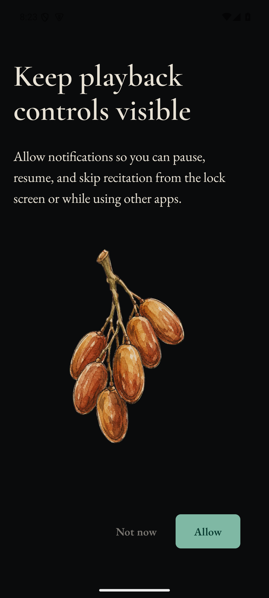
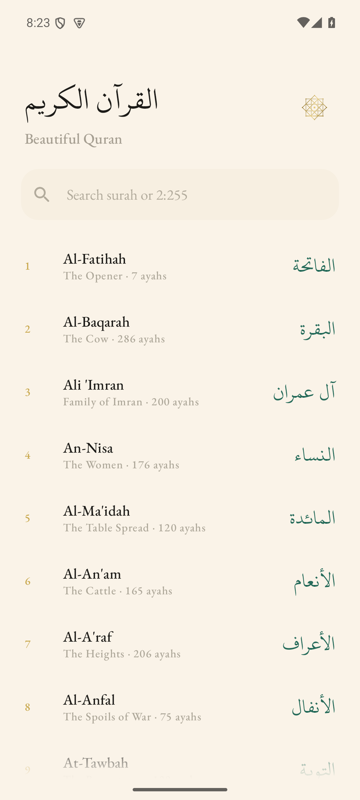
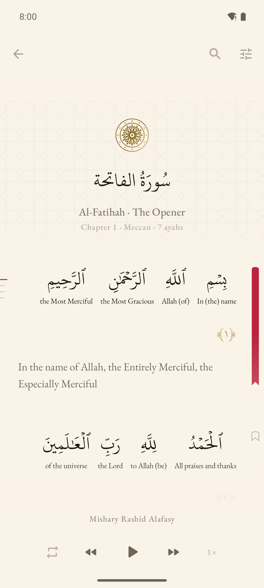
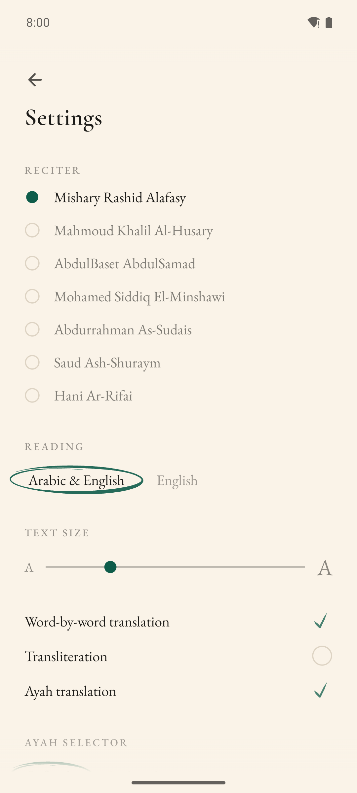

Arabic & English
Arabic flows right-to-left with the English gloss under each word and the full translation below the ayah.
Android & web
One sheet of paper. Every word lights up with the reciter — like lyrics for the Quran.
No ads, no accounts, no analytics. Just the book, recited, calm and pure.

The signature feature
As the reciter speaks, each Arabic word blooms from the page — timed to the millisecond, with its English meaning beneath it.
In the name of Allah, the Entirely Merciful, the Especially Merciful
What you get
Karaoke-style Arabic, timed to seven reciters, streamed and cached.
Full Quran in KFGQPC Hafs typeface, built for clarity and fidelity.
English under each word, with Saheeh International beneath the ayah.
One ayah, a surah, or a custom span — perfect for memorization.
Find meaning inside a surah without leaving the page.
Warm paper and charcoal dark. Offline text and timings always.
On the page
Four flat sheets — bookmarks, chapters, reader, settings. Hierarchy from spacing and ink, never from cards or chrome.



Reading modes
Arabic flows right-to-left with the English gloss under each word and the full translation below the ayah.
The gloss becomes the primary line and lights word-by-word on the same timings as the recitation.
Transliteration when you want it. Ayah translation when you don’t. All of it serif, all of it paper.
Open the web reader in your browser, or install the Android APK. Same paper stack, same word-sync, no signup.
Quran text (Uthmani) + Saheeh International translation — via the quran-json project, from Tanzil and Al Quran Cloud · free with attribution
Word-by-word gloss + transliteration — Quran.com dataset · free with attribution
Word timing segments — the quran-align project contributors · CC-BY 4.0
Repeat-aware timing segments — quran.com qdc audio API · free with attribution
Recitation audio — streamed from everyayah.com · rights remain with reciters
Arabic typeface — KFGQPC HAFS Uthmanic Script, King Fahd Complex · free redistribution